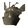

Dad

| Config name | troll_champion |
| NPC id | 1125 |
| Combat level | 101 |
| Hitpoints | 120 |
| Attack / Strength / Defence | 60 / 120 / 50 |
| Respawn | 100 ticks |
| Options | Talk-to, Attack |
| Wander range | 0 tiles from spawn |
| Max range | 30 tiles from spawn |
| Defined in | scripts/quests/quest_troll/configs/quest_troll.npc |
| Bonuses | Attack bonus 40, Strength bonus 70, Stab def 25, Slash def 25, Crush def 40, Magic def 200, Range def 200 |
Dad
An unusually large troll.
Show all 1 spawn on the world map → Open in knowledge graph →
Drops
Drop script: scripts/quests/quest_troll/scripts/troll_champion.rs2 (specific handler)
No drops recorded.
Locations
| Area | Coordinates | Level | Count | Map |
|---|---|---|---|---|
| Death Plateau | 2911, 3612 | 0 | 1 | view |
Dialogue
DadWhat tiny human do in troll arena? Dad challenge human to fight!
PlayerWhy are you called Dad?
DadTroll named after first thing try to eat!
PlayerI accept your challenge!
DadTiny human brave. Dad squish!
PlayerEek! No thanks.
DadCoward. Dad wait for braver fighter.
DadTiny human brave. Dad squish!
Quests
Referenced in scripts
scripts/quests/quest_troll/scripts/quest_troll.rs2scripts/quests/quest_troll/scripts/troll_champion.rs2scripts/quests/quest_troll/scripts/troll_spectator.rs2